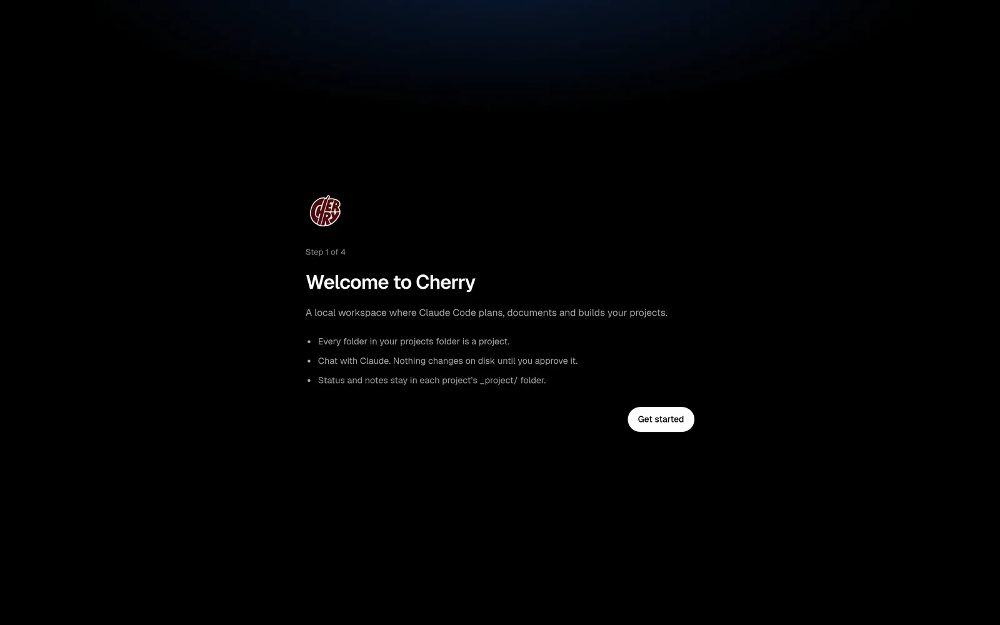

Approve every change
Each edit arrives as a diff card and each command shows what it runs and where. Allow once, allow for the session, or deny with a reason. Claude waits.

Cherry is a local workspace that drives Claude Code the way a senior engineer works: survey, decide, document, then build. It runs on your machine, reads your projects folder, and every edit waits for your yes.
$ cherry-pick your workflow
Features
Not a code editor, not a vibe-coding toy. You read and decide here; Claude does the typing.
Each edit arrives as a diff card and each command shows what it runs and where. Allow once, allow for the session, or deny with a reason. Claude waits.
Seven decision cards (users, scope, stack, data, quality bar) then Claude writes CLAUDE.md, a PRD, ADRs and the first commit.

One play button starts the dev server, streams its output and gives you the link. It also finds servers Claude already started.

After a turn: the files, the lines, the commands and how they went. Free. Ask for a plain-words explanation only when you click.

Security review, test runner, code health and dependency audit. Read-only, one click, a report you read in the centre.

Ask what is stuck this week. Magnet reads all your projects, answers, and proposes actions (start an agent, calibrate a folder, push) that you approve.

Tasks run on their own git worktree and branch. Review the diff, then Accept or Discard.
Edit any text file. Save refuses if the file changed on disk. Secrets stay blocked.
Docs reader with ADR links, Markdown preview, a live Status report and Notes & Tasks.
Haiku groups your changes into small conventional commits. You commit as yourself.
Branch, ahead and behind, pull, push after approval, open pull requests.
Just black, Cherry dark, Cherry light and Classic. Pick one on first start.
How it works
Describe the idea. Answer seven short questions, each with a recommended option and its trade-off.
Every real choice becomes an ADR. Change an answer later and Cherry marks what needs a re-check.
CLAUDE.md, PRD, architecture, data model and STATUS.md are written before any code, with your approval.
Chat, agents and scans do the work. You approve, run it, and commit in small steps.
A closer look



Safety
The daemon binds 127.0.0.1. Every request needs a session from a one-time login link; Host and Origin are checked.
Edits and commands wait for approval. sudo, force pushes to main and rm -rf outside the project are blocked outright.
.env files, keys and credentials are never read, and Claude's file tools cannot leave the project folder.
Small automatic jobs use Haiku with capped prompts. Reviews, reports and explanations run only when you click.
Install
Needs Linux, Claude Code (signed in), git and mise or Node 22 + pnpm. The GitHub CLI is optional.
# get Cherry
git clone https://github.com/syedmehedihussain/cherry.git
cd cherry
mise install && pnpm install
./scripts/install-cli.sh
# start it: opens your browser with a one-time login link
cherryPrefer to let Claude do it? The repo ships a Claude Code skill that installs, runs and troubleshoots Cherry.
Free and open source under the MIT licence.